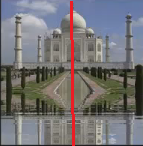

১৪.৩.১।
নিচের চিত্রসমূহের কোনটির প্রতিসাম্য রেখা রয়েছে?
বাড়ির চিত্র:
বাড়ির চিত্র-১
বাড়ির চিত্রটিকে যে কোন রেখা বরারব বিভক্ত করা হোক না কেন দুইটি একই রকম চিত্র পাওয়া যাবে না।
সুতরাং, প্রদত্ত বাড়ির চিত্রের কোন প্রতিসাম্য রেখা নেই।
মসজিদের চিত্র:
মসজিদের চিত্র-১
মসজিদের চিত্র-২
চিত্রটিকে (মসজিদের চিত্র-২) যদি রেখা বরারব বিভক্ত করা হয়, তবে দুইটি একই রকম চিত্র পাওয়া যায়।
সুতরাং, প্রদত্ত চিত্রের প্রতিসাম্য রেখা আছে ।
পার্লামেন্ট ভবনের চিত্র:
পার্লামেন্ট ভবনের
চিত্র-১
পার্লামেন্ট ভবনের
চিত্র-২
চিত্রটিকে (পার্লামেন্ট ভবনের চিত্র-২) যদি রেখা বরারব বিভক্ত করা হয়, তবে দুইটি একই রকম চিত্র পাওয়া যায়।
সুতরাং, প্রদত্ত চিত্রের প্রতিসাম্য রেখা আছে ।
তাজমহলের চিত্র:
তাজমহলের
চিত্র-১

তাজমহলের
চিত্র-২
চিত্রটিকে (তাজমহলের চিত্র-২) যদি রেখা বরারব বিভক্ত করা হয়, তবে দুইটি একই রকম চিত্র পাওয়া যায়।
সুতরাং, প্রদত্ত চিত্রের প্রতিসাম্য রেখা আছে ।